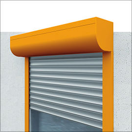
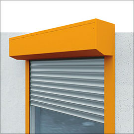
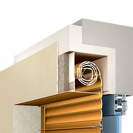

Серии рольставен Алютех
PRESTIGE
Рольставни премиум-качества для эксклюзивных дизайнерских экстерьеров
- P1 класс взломостойкости
- Оптимальная защита от ветра
- Перфорированный и неперфорированный профили
- Короба: встроенные, круглые, полукруглые, 20° и 45°
TREND
Доступное решение с базовыми функциями защиты
- Базовая антивандальная защита
- Ветровая устойчивость: базовый запас прочности
- Неперфорированный профиль
- Более 7 популярных цветов
- Короба: Встроенные и 45°
SECURITY
Специальные решения для объектов с высокими требованиями к безопасности
- P3-P5 классы защиты от взлома
- Выдерживают ураганные ветры
- Перфорированный и неперфорированный профили
- Встроенные, круглые, полукруглые, 20° и 45°
Автоматическое управление
Закажите автоматику, чтобы роллетные системы стали еще более функциональными. Управляйте несколькими рольставнями одновременно. Настройте особый график открытия и закрытия роллет.
Типы защитных коробов рольставен

Защитный круглый короб (роллформинговый, экструдированный)
Защитный полукруглый короб (роллформинговый, экструдированный)
Защитный короб 45° (роллформинговый)
Защитный короб 20° (роллформинговый)
Встроенный короб серии SB-I
Стойкость к корозии
Для защиты панелей "АЛЮТЕХ" наносят цинковое покрытие(16 мкм), слой грунта(14-16 мкм) и декоративное покрытие ПУР-ПА(20-25 мкм)
Широкая линейка стандартных ролет
Стандартные ролеты можно встраивать в проёмы от 0,5м до 2м. Доступна высота ролет от 400мм до 3000мм
Индивидуальный подход
Возможно изготовление ролет по индивидуальным размерам с шагом 5мм и с индивидуальным подбором комплектации под объект
Популярные готовые решения
На нашем сайте вы можете оформить заявку на рольставни под заказ или из каталога популярных решений. В первом случае вы сами выбираете подходящий цвет и необходимый размер. Продукция из каталога — это полностью готовое решение стандартных размеров и цвета, проверенное сотнями покупателей.
11 320 руб.
Рольставни серии Trend
Неперфорированный профиль PD/39N, базовая защита от взлома цвет: белый, 700×2100 мм, с автоматическим управлением, накладной монтаж, защитный короб 45°
21 810 руб.
Рольставни серии Prestige
Перфорированный профиль AR/40 с накладным коробом, стандартная защита от взлома цвет: антрацит, 2100х1500 мм, с автоматическим управлением, накладной монтаж, защитный короб 45°
18 240 руб.
Рольставни серии Security
Противовзломный профиль AER44m/S, максимальная защита от взлома цвет: коричневый 1100х2200 мм с автоматическим управлением, встроенный монтаж, защитный короб 45°
16 110 руб.
Рольставни серии Trend
Неперфорированный профиль PD/39N, базовая защита от взлома цвет: коричневый, 1800х1500 мм, с автоматическим управлением, накладной монтаж, защитный короб 45°
36 190 руб.
Рольставни серии Prestige
Неперфорированный профиль AR/40N, стандартная защита от взлома цвет: коричневый 2600х2500 мм, с автоматическим управлением, встроенный монтаж, защитный короб 45°
17 720 руб.
Рольставни серии Prestige
Перфорированный профиль AR/40, стандартная защита от взлома цвет: шоколадно-коричневый, 1800х1500 мм с автоматическим управлением, встроенный монтаж, защитный короб 45